Post-mortem analysis¶
Main objectives of the practice¶
Analyze the evidence provided by different artifacts in Windows operating systems.
PART A¶
1. Regarding prefetch¶
What are they?
These are files generated by Windows that contain data about executed programs.What file extension do they have?
.pfIn which directory can they be found?
The default path for prefetch files isC:\Windows\Prefetch.What forensic information do they store that may be important for an investigation?
They allow reconstruction of user activity, showing a chronology of executed programs and sometimes how many times they were run.
2. Regarding LOGs¶
Which ones do you think are the most important based on the content they store?
Application logs are the most important for forensic analysis, as they show user actions. In enterprise environments, system logs are also crucial to check for damage caused by malware.Where can they be found?
System logs are located atC:\Windows\System32\winevt\Logs.
These logs record security events, system events, and application events.
3. Regarding the hibernation file hiberfil.sys¶
Where can it be found?
The typical location is the root of the disk:C:\.Which tool can be used to decode its contents?
Rekall, Volatility, or WinDbg (Microsoft Windows Debugger), among others.Do you think the information it contains is important?
Yes, it contains a snapshot of RAM when the system enters hibernation, potentially holding sensitive user data and system state.
4. Regarding snapshots, restore points and/or Volume Shadow Copies Service (VSS)¶
What file system is required to use this technology?
NTFSIs it enabled by default or does the user need to activate it?
It is enabled by default, but periodic snapshots are not configured automatically.How often are they created?
They are typically created during major installations or updates.Think of a couple of scenarios where they may be useful:
Recovering the system after a ransomware attack.
Undoing changes caused by faulty driver updates.
5. Questions related to the Windows Registry¶
Research how to import and export registry keys in CLI and GUI environments:
a) GUI: Open Regedit → select key → File → Export / Import

b) CLI:
reg export “(Key)” C:(Name_to_export)
reg import C:(Name_of_the_key_to_import)List registry keys that are forensically interesting to export and analyze, explaining what information they reveal:
Run: Programs executed at startup.
RecentDocs: Recently opened files.
USBStor: USB devices connected to the system.
6. Events of forensic interest¶
What types of events may be interesting to inspect from a forensic perspective? Give a couple of examples:
Security events: Track user logins.
System events: Track software installations and failures.
7. Software tools¶
Tools for each artifact:
Prefetch: PECmd
Logs: Event Log Explorer
Hibernation file: Volatility
Volume Shadow Copies Service: ShadowExplorer
System registry: FTK Imager
Event management: Event Log Explorer
Shortcuts & Caches and browsing history: Nirsoft
Recycle Bin: Rifiuti
PART B¶
The practice consists of extracting as much evidence as possible from a Windows operating system by performing targeted searches on the different artifacts it uses.
Although in a real scenario this would be done using a system image, for this practice it is recommended, for agility, to use the operating system installed on the student’s computer.
In my case, I will use a Windows partition that I use for a few things, but as I don’t use it a lot some hives will not exist because I do not use Windows for daily life.
Software to be used¶
A. Windows 10 (32 or 64 bits)
B. FTK Imager
C. Arsenal Image Mounter
D. Registry Explorer
E. Reg Ripper
F. WRR
G. LinkParser
H. JumpListExplorer
I. ShellbagExplorer
J. USB Detective
Evidence extraction¶
Open FTK Imager and click the image icon.

This will allow you to mount the disk image for analysis.
Click “Logical Drive” and click on “Next”.

Select your disk and click “Finish”.

Verify the evidence tree appears in FTK Imager.

Now extract some files for analysis by navigating to \root\Windows\System32\Config\ and clicking “Export Files…”

These are critical registry hives for forensic analysis.
I’ll save them as “windows-artifacts”.

Open WRR, click “File” → “Open…”.

Select “SOFTWARE”, “SYSTEM” and “SAM” and click on “Open”.

These registry hives contain software settings, system info, and user account data.
Verify files were correctly exported to WRR.

Repeat the same process for root\Windows\Users\{USER}.

Add “NTUSER.DAT” inside {USER}\ and “UsrClass.DAT” inside {USER}\AppData\Local\Microsoft\Windows\ to WRR.
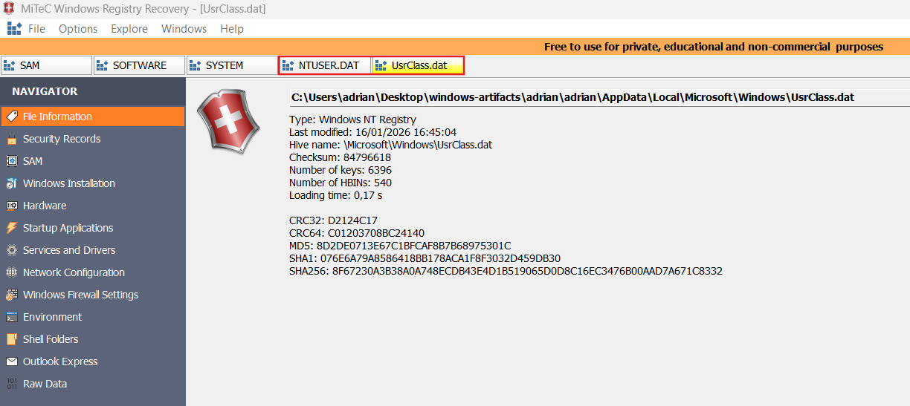
Artifacts and paths of interest¶
System information¶
System version
Software\Microsoft\Windows NT\CurrentVersion
Shows OS version, build, and install info.

Machine name
System\ControlSet001\Control\ComputerName\ComputerName
Stores the hostname of the computer.

Time zone
System\ControlSet001\Control\TimeZoneInformation
Shows local time zone settings.

Last access timestamp
System\ControlSet001\Control\Filesystem
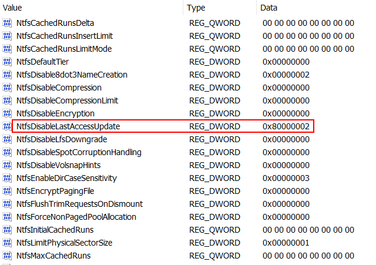
Controls if Windows updates the last access date of files and folders.
Value |
Actual behavior |
|---|---|
0 |
Updates the last access timestamp for both files and directories (legacy behavior, lower performance). |
1 |
Does not update the last access timestamp for files or directories. |
2 |
System managed (default since Windows Vista/7). Windows decides when to update to balance compatibility and performance. |
3 |
Updates the last access timestamp for directories only, not for files. |
Shutdown time
System\ControlSet001\Control\Windows
Stores last shutdown or restart timestamps.


Network¶
Network interfaces
System\ControlSet001\Services\Tcpip\Parameters\Interfaces\{GUID_INTERFACE}
Stores DNS root servers and whether the computer has completed the network configuration after installation.


Network history
Software\Microsoft\Windows NT\CurrentVersion\NetworkList\
Contains networks the computer connected to, including SSIDs.


 These are the root DNS
These are the root DNS
Software\Microsoft\Windows NT\CurrentVersion\NetworkList\Nla\Cache
(Not present.)
Cached information about networks.
Software\Microsoft\Windows NT\CurrentVersion\NetworkList\Nla\Wireless
Cached information about wireless networks.


When a network was connected
Software\Microsoft\Windows NT\CurrentVersion\NetworkList\Profiles
Shows timestamps of network connections.
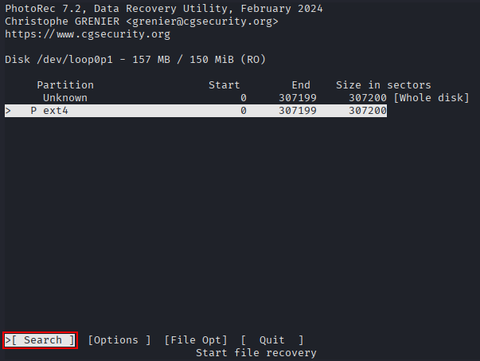
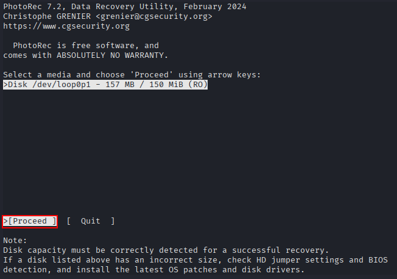
Sharing and startup¶
Shared folders
System\ControlSet001\Services\LanmanServer\Shares\
Lists folders shared over the network.

Startup programs
NTUSER.DAT\Software\Microsoft\Windows\CurrentVersion\Run
Programs set to start automatically when the user logs in.

NTUSER.DAT\Software\Microsoft\Windows\CurrentVersion\RunOnce
Per-user programs that run once on the user’s next login.

Software\Microsoft\Windows\CurrentVersion\RunOnce
System-wide programs that run once at the next login for any use.
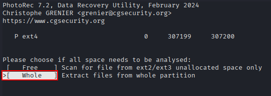
Software\Microsoft\Windows\CurrentVersion\Policies\Explorer\Run
Sometimes contains enforced startup items.
(Not present.)
Software\Microsoft\Windows\CurrentVersion\Run
Programs that start automatically every time the user logs in
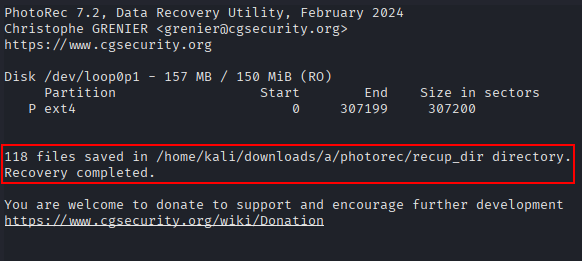
User activity¶
Searches in the search bar
NTUSER.DAT\Software\Microsoft\Windows\CurrentVersion\Explorer\WordWheelQuery
Stores user search queries in Windows Explorer/Start menu
(Not present.)Typed paths in Start or Explorer
NTUSER.DAT\Software\Microsoft\Windows\CurrentVersion\Explorer\TypedPaths
Shows file paths the user manually entered.

Recent documents
NTUSER.DAT\Software\Microsoft\Windows\CurrentVersion\Explorer\RecentDocs
Tracks recently opened files.
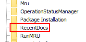
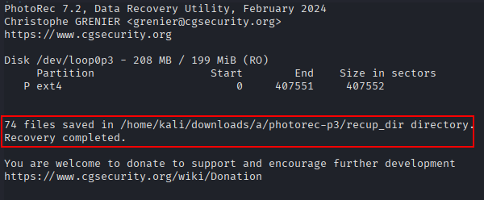Recent Office documents
NTUSER.DAT\Software\Microsoft\Office\{Version}\{Excel|Word}\UserMRU
Tracks recently opened Office file.
(Not present.)Reading position of last opened document
NTUSER.DAT\Software\Microsoft\Office\Word\Reading Locations\Document X
Stores where you left off in Word documents.
(Not present.)Autosaved Office files
C:\Users\{user}\AppData\Roaming\Microsoft\{Excel|Word|PowerPoint}\
Temporary autosave files for Office apps.
(Not present.)OpenSaveMRU
NTUSER.DAT\Software\Microsoft\Windows\CurrentVersion\Explorer\ComDlg32\OpenSavePidlMRU
Stores recently opened/saved files per application.
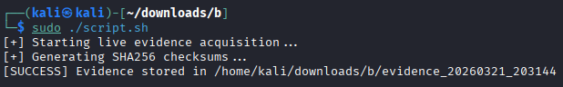Last executed commands
NTUSER.DAT\Software\Microsoft\Windows\CurrentVersion\Explorer\RunMRU
Tracks commands typed in Run dialog.

NTUSER.DAT\Software\Microsoft\Windows\CurrentVersion\Explorer\Policies\RunMRU
Same as RunMRU but enforced by policies.
(Not present.)
UserAssist (programs executed)
NTUSER.DAT\Software\Microsoft\Windows\CurrentVersion\Explorer\UserAssist\{GUID}\Count
Tracks execution counts of applications.

Taskbar-related events
NTUSER.DAT\Software\Microsoft\Windows\CurrentVersion\Explorer\FeatureUsage
Tracks user interaction with taskbar features.
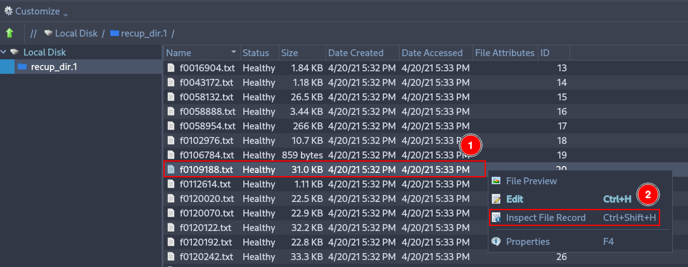
...\AppBadgeUpdated
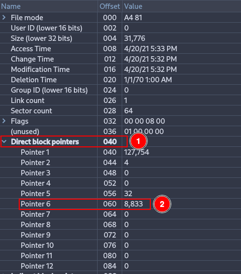
Records when a taskbar app badge (like notifications) is updated.
...\AppLaunch

Logs when a user launches an application from the taskbar.
...\AppSwitched
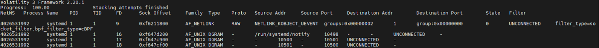
Tracks when the user switches between apps pinned or open on the taskbar.
...\ShowJumpView
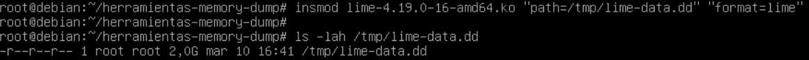
Logs when the user opens a jump list (right-click menu) on a taskbar app.
Recent applications
Software\Microsoft\Windows\CurrentVersion\Search\RecentApps
Lists recently used apps.
(Not present.)
Shortcuts and Jump Lists¶
Recent documents (LinkParser / LeCMD)
C:\Users\{user}\AppData\Roaming\Microsoft\Windows\Recent
Contains shortcut (.lnk) files of recently opened documents.
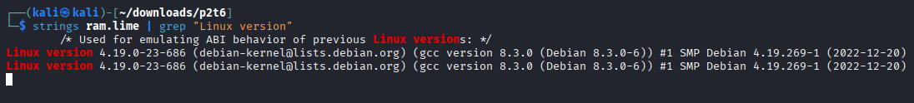
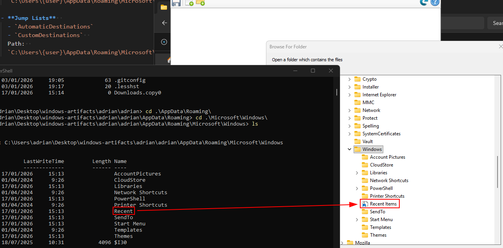
Jump Lists
C:\Users\{user}\AppData\Roaming\Microsoft\Windows\Recent\AutomaticDestinations
Shows recent and pinned items for applications.
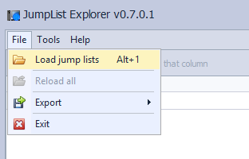


C:\Users\{user}\AppData\Roaming\Microsoft\Windows\Recent\CustomDestinations

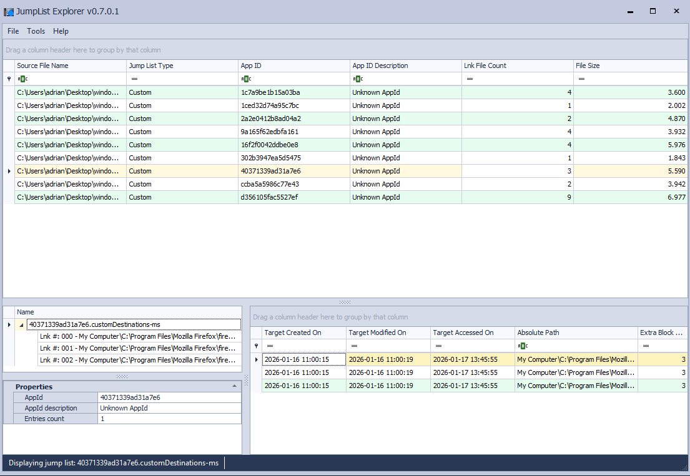
Shellbags¶

USRCLASS.DAT\Local Settings\Software\Microsoft\Windows\Shell\Bags
Stores the view settings of folders (icon view, details view, window size, etc.) for individual folders.
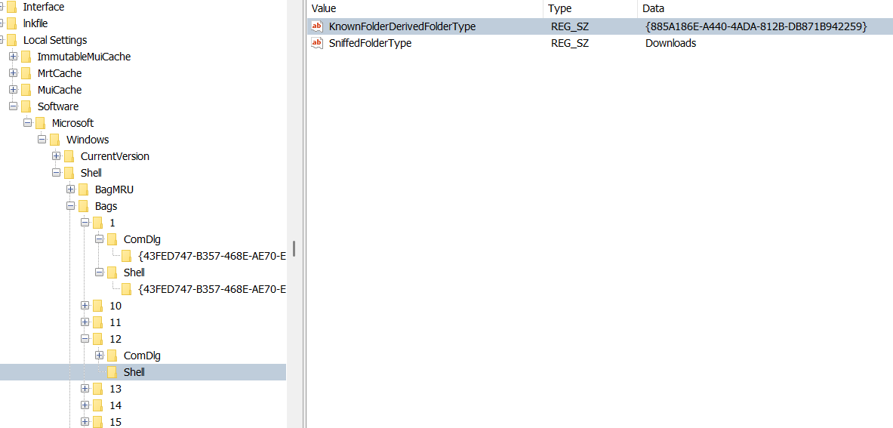
USRCLASS.DAT\Local Settings\Software\Microsoft\Windows\Shell\BagMRU
Stores the hierarchy of folders that the user has accessed, linking to the corresponding Bags entries.

NTUSER.DAT\Software\Microsoft\Windows\Shell\BagMRU
Another location tracking folder access and structure, used by newer versions of Windows for the MRU (Most Recently Used) folder list.
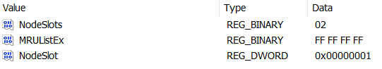
Using a tool like Shellbags Explorer is it possible to visualize Shellbags on a easiest way. 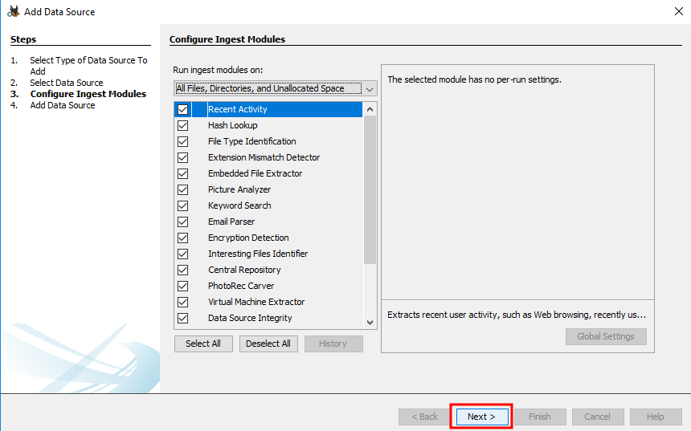
USB and MTP devices¶
MTP devices
C:\Users\{user}\AppData\Local\Temp\WPDNSE\{GUID}
(Not present.)USB storage (VID / PID)
SYSTEM\ControlSet001\Enum\USBSTOR
Shows vendor/product IDs and device serials.
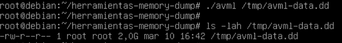USB volume names
SOFTWARE\Microsoft\Windows Portable Devices\Devices
Stores friendly device names.

User who used the USB device
SYSTEM\MountedDevices
NTUSER.DAT\Software\Microsoft\Windows\CurrentVersion\Explorer\MountPoints2
Shows which user mounted the device and assigned drive letters.
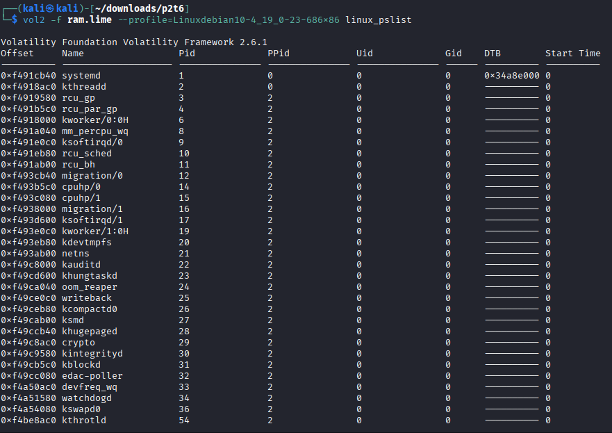

Logical volume serial number
Software\Microsoft\Windows NT\CurrentVersion\EMDMgmt
Stores volume serials for identification.
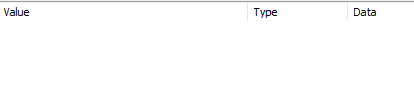First and last connection time
SYSTEM\ControlSet001\Enum\USBSTOR\{VEN_PROD_VERSION}\{USB_SERIAL}\Properties\{83da6326-97a6-4088-9453-a1923f573b29}
Tracks timestamps of USB device connections.
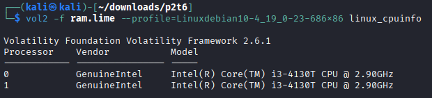
C:\Windows\inf\setupapi.dev.log
Tracks the installation and configuration of device drivers on the system
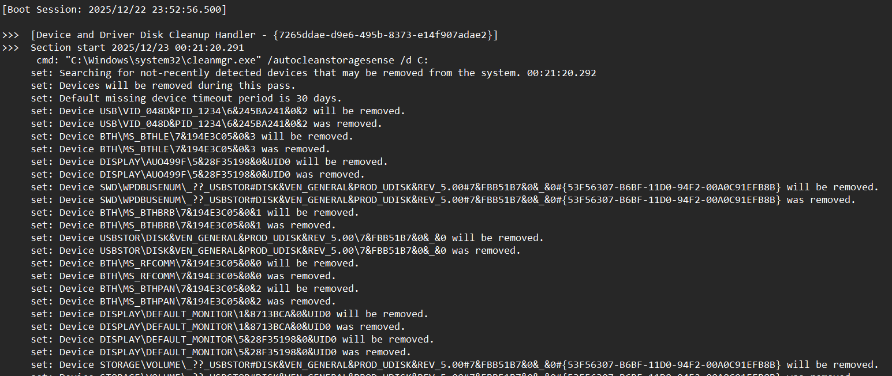
0064 – First connection (InstallDate)
Indicates the first time the USB device was installed/connected on the system.
0065 – Last connection (LastArrivalDate)
Indicates the most recent time the USB device was connected.
0066 – Last disconnection (LastRemovalDate)
Indicates the most recent time the USB device was safely removed. 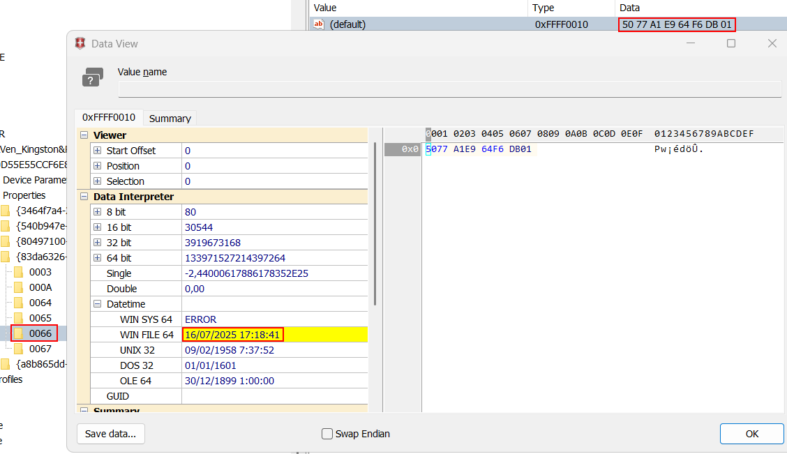
Databases and system artifacts¶
Cortana database
C:\Users\{user}\AppData\Local\Packages\Microsoft.Windows.Cortana_xxxx\LocalState\ESEDatabase_CortanaCoreInstance\CortanaCoreDb.dat
(Not present.)Windows notifications
C:\Users\{user}\AppData\Local\Microsoft\Windows\Notifications\wpndatabase.db
Tracks notifications shown to the user.

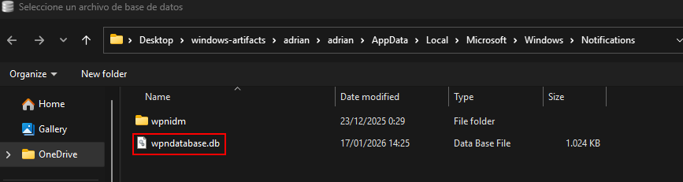

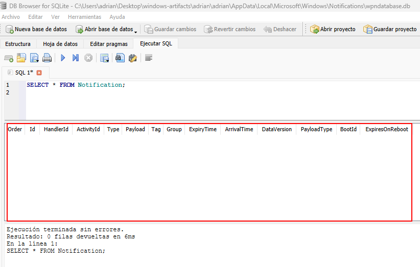Timeline
C:\Users\{user}\AppData\Local\ConnectedDevicesPlatform\ActivitiesCache.db
Tracks app and file activity over time.
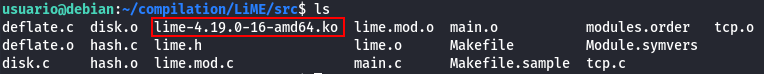Windows Store
Software\Microsoft\Windows\CurrentVersion\Appx\AppxAllUserStore\Applications\
Contains Windows Store app installation state.
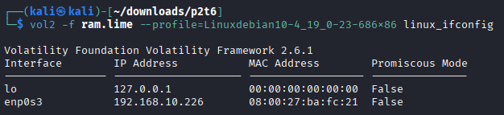
Other artifacts¶
Thumbnails and Thumbcache
thumbs.db
C:\Users\{user}\AppData\Local\Microsoft\Windows\Explorer
Stores thumbnail images of files for faster previews.


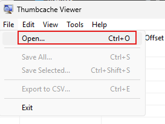


Recycle Bin
C:\$Recycle.Bin
Stores deleted files.

Copy for analysis:
Copy-Item -Recurse -Force 'C:\$Recycle.Bin\S-1-5-21-4071608857-1089510339-248207473-1000' 'C:\RecycleBackup'
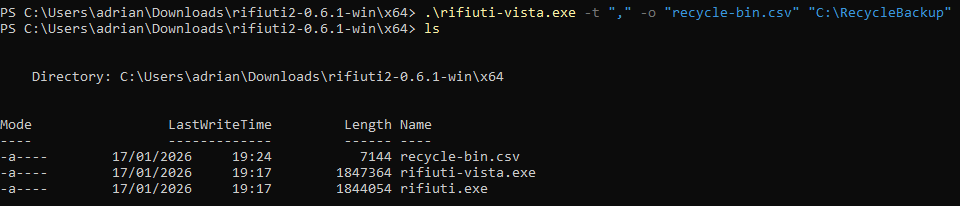
Export to CSV:
.\rifiuti-vista.exe -t "," -o "recycle-bin.csv" "C:\RecycleBackup"
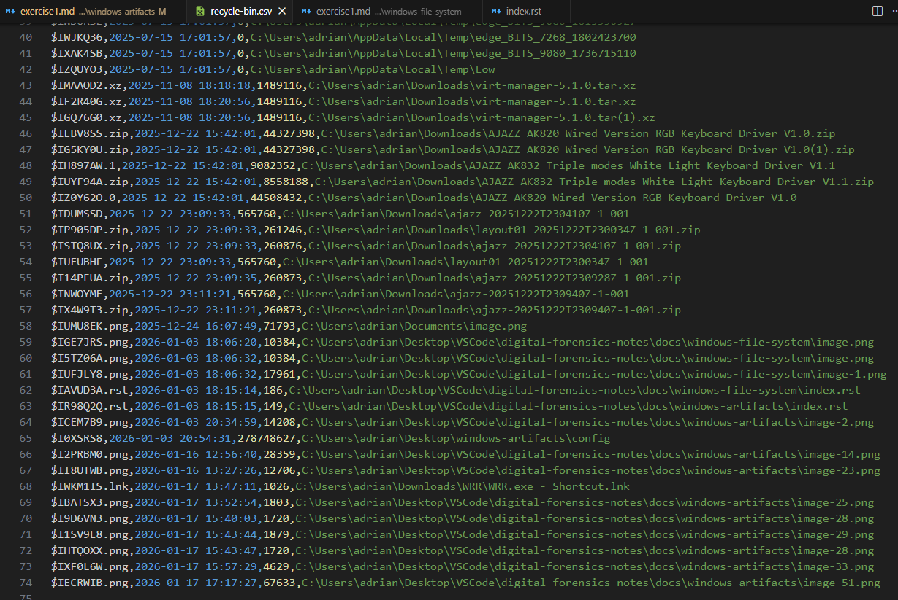
OfficeFileCache
C:\Users\{user}\AppData\Local\Microsoft\Office\{Version}\OfficeFileCache
(Not present.)OfficeBackstage
C:\Users\{user}\AppData\Local\Microsoft\Office\16.0\BackstageInAppNavCache
(Not present.)Public IP (ETLParser)
C:\Windows\ServiceProfiles\NetworkService\AppData\Local\Microsoft\Windows\DeliveryOptimization\Logs
.\ETLParser.exe -c DeliveryLogs -s "C:\Windows\ServiceProfiles\NetworkService\AppData\Local\Microsoft\Windows\DeliveryOptimization\Logs" -o "C:\Users\adrian\Downloads\ETLOutput"
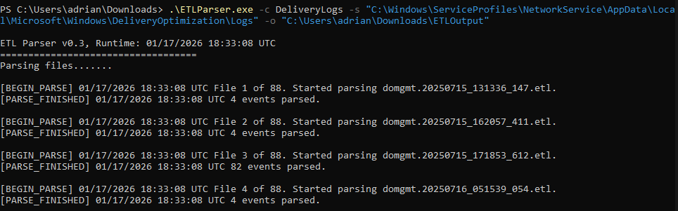


PowerShell command history
C:\Users\{user}\AppData\Roaming\Microsoft\Windows\PowerShell\PSReadLine\ConsoleHost_history.txt
Stores previously executed PowerShell commands.
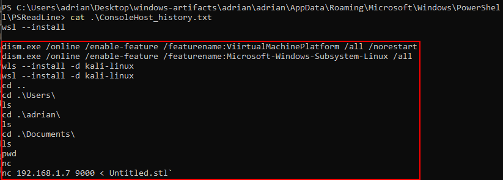Prefetch
C:\Windows\Prefetch
Stores data about program execution.


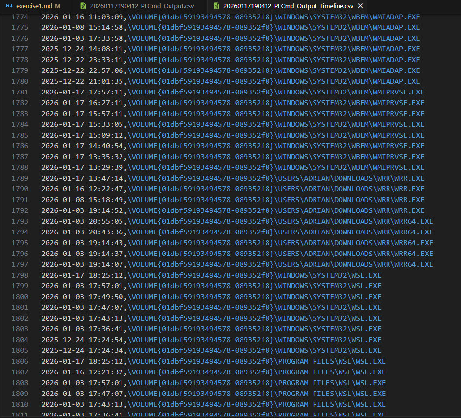SuperFetch
C:\Windows\Prefetch\Ag*.db
Caches frequently used applications to speed up loading.
As I’m using a ssd superfetch files are not generatedSRUM
C:\Windows\System32\sru\SRUDB.dat
Tracks network, CPU, and power usage.
ShimCache
SYSTEM\ControlSet001\Control\SessionManager\AppCompatCache\AppCompatCache
Registry-based cache listing previously executed programs, even if deleted.AmCache (AppCompatCacheParser)
C:\Windows\AppCompat\Programs\Amcache.hve
Stores metadata about executed programs, installation times, and file paths. 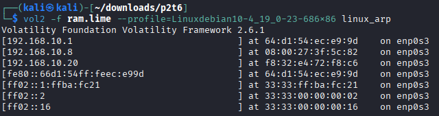 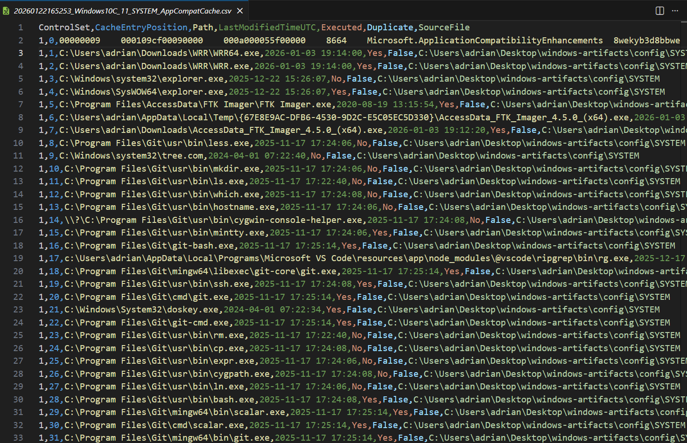Scheduled Tasks
SOFTWARE\Microsoft\Windows NT\Current Version\TaskCache\Tree
Lists tasks scheduled by the system or users.
Services
SYSTEM\ControlSet001\Services
Registry keys storing installed services and their configuration.
BAM (DCode)
Tracks per-user application activity and resource usage.SYSTEM\ControlSet001\Services\bam\UserSettings{SID}
Not present
SYSTEM\ControlSet001\Services\bam\state\UserSettings{SID}

Windows Event Logs
C:\Windows\System32\winevt\Logs
Stores system, security, and application events for auditing and forensic analysis.